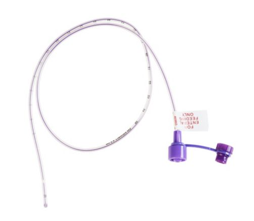

Nosso portfólio inclui desde materiais descartáveis e instrumentais cirúrgicos até equipamentos hospitalares avançados. Além disso, oferecemos suporte técnico especializado e atendimento consultivo.
Alimentação enteral | Kangaroo™ ePump e equipos de alimentação enteral
Alimentação enteral | Produtos de acesso enteral
Alimentação enteral | Sondas de alimentação nasogástrica para adultos

Alimentação enteral | Sondas de alimentação Kangaroo™ para pacientes pediátricos e neonatos
BioFreedom Ultra
BioMatrix Alpha
PICC Argyle™ | Cateter central de inserção periférica para neonatos
Powerline
Rise NC
Monoject™ Seringas orais/enterais e acessórios
Compressão | Smart Compression™
Compressão | Meias Antiembólicas T.E.D.™
Cuidado avançado de feridas | Coberturas de Alginato de Cálcio Kendall™